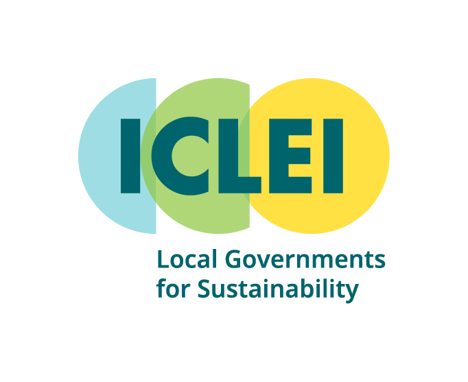

<!DOCTYPE html>
<html>

<head>
    <title>Rosario, Argentina Building Rooftop Solar Potential</title>
    <meta name="viewport" content="width=device-width, initial-scale=1.0">
    <meta charset="utf-8">

    <!-- Load Leaflet code library: see http://leafletjs.com/download.html -->
    <link rel="stylesheet" href="https://unpkg.com/leaflet@1.7.1/dist/leaflet.css">
    <script src="https://unpkg.com/leaflet@1.7.1/dist/leaflet.js"></script>
    <script src="https://ajax.googleapis.com/ajax/libs/jquery/2.2.0/jquery.min.js"></script>

    <!-- Position the map and title with Cascading Style Sheet (CSS) -->
    <style>
        body {
            padding: 0;
            margin: 0;
        }

        html,
        body,
        #map {
            height: 100%;
            width: 100%;
        }

        .popup {
            text-align: center;
        }

        .legend {
            padding: 6px 8px;
            background-color: rgba(255, 255, 255, 0.8);
            box-shadow: 0 0 15px rgba(0, 0, 0, 0.2);
            border-radius: 5px;
        }

        .legend i {
            width: 18px;
            height: 18px;
            float: left;
            margin-right: 8px;
            opacity: 0.7;
        }

        div.legend.leaflet-control br {
            clear: both;
        }


        .description {
            font-size: 13px;
            line-height: 18px;
            color: #333333;
            font-family: 'Open Sans', Helvetica, sans-serif;
            padding: 5px 14px;
            background-color: rgba(245, 245, 220, 0.8);
            box-shadow: 0 0 15px rgba(0, 0, 0, 0.2);
            border-radius: 5px;
            max-width: 290px;
            border: 1px solid grey;
        }
        .description img {
            width: 150px;
            margin: auto;
            display: block;
            float: left;
        }
        .description img.two {
            width: 75px;
            margin: auto;
            display: block;
            }
        .description p {
            font-size: 14px;
            line-height: 24px;
        }
    </style>
</head>

<body>

    <!-- Display the map and title with HTML division tags  -->
    <div id="map"></div>

    <!-- Create the interactive map content with JavaScript (.js) -->
    <script>

        /* Set up the initial map center and zoom level */
        var map = L.map('map', {
            center: [-32.94682, -60.63932], // EDIT coordinates to re-center map
            zoom: 13,  // EDIT from 1 (zoomed out) to 18 (zoomed in)
            scrollWheelZoom: true,
            tap: true,
        });

        /* display basemap tiles -- see others at https://leaflet-extras.github.io/leaflet-providers/preview/ */
        var carto = L.tileLayer(
            'https://{s}.basemaps.cartocdn.com/light_all/{z}/{x}/{y}{r}.png', {
            attribution: '&copy; <a href="https://osm.org/copyright">\
        OpenStreetMap</a> contributors, &copy;\
        <a href="https://carto.com/attribution">CARTO</a>'
        }).addTo(map);

        //chosing a tileLayer
        var TL = L.tileLayer(
            "https://{s}.tile.openstreetmap.org/{z}/{x}/{y}.png",
            {
                attribution: '&copy; <a href="http://' +
                    'www.openstreetmap.org/copyright">OpenStreetMap</a>'
            }
        ).addTo(map);

        var imagery = L.tileLayer('https://server.arcgisonline.com/ArcGIS/rest/services/World_Imagery/MapServer/tile/{z}/{y}/{x}', {
            attribution: 'Tiles &copy; Esri &mdash; Source: Esri, i-cubed, USDA, USGS, AEX, GeoEye, Getmapping, Aerogrid, IGN, IGP, UPR-EGP, and the GIS User Community'
        });

        let breaks = [-Infinity, 25333.76, 34248.60, 47132.85, 62606.10, 81277.84, 110115.58, 157131.12, 270478.81, Infinity];
        let colors = ["#ffffcc", "#ffeda0", "#fed976", "#feb24c", "#fd8d3c", "#fc4e2a", "#e31a1c", "#bd0026", "#800026"];

        function build_color(d) {
            for (let i = 0; i < breaks.length; i++) {
                if (d > breaks[i] && d <= breaks[i + 1]) {
                    return colors[i];
                }
            }
        }


        function build_style(feature) {
            return {
                fillColor: build_color(feature.properties.elec_prod),
                weight: 0.5,
                opacity: 1,
                color: "black",
                fillOpacity: 0.7
            };
        }
        // var url = 'data/rosario_sp.geojson';
        // Add centroid variable
        var centro = L.layerGroup()
        
        $.getJSON('data/ros_osm_wmuni.geojson', function (data) {
            myLayer = L.geoJSON(data,
                { style: build_style, onEachFeature: Base_pop }).addTo(map);
        });

        function Base_pop(feature, layer) {
            layer.bindPopup('<p><b>Building Name: </b>' + feature.properties.name +
                '</p><p><b>Type of Building: </b>' + feature.properties.type +
                '</p><p><b>Mean GHI (W/m2): </b>' + feature.properties._mean +
                '</p><p><b>Usable Solar Power (kWh): </b>' + feature.properties.usable_sr +
                '</p><p><b>Electricity Production (kWh): </b>' + feature.properties.elec_prod + '</p>');
        };
        
        function build_style2(feature) {
            return {
                fillColor: build_color(feature.properties.elec_prod),
                weight: 5,
                opacity: 1,
                color: "Blue",
                fillOpacity: 0.7
            };
        }
        $.getJSON('data/ros_muni.geojson', function (data) {
            muniLayer = L.geoJSON(data,
                { style: build_style2, onEachFeature: Muni_pop }).addTo(map);
        });
        
         function Muni_pop(feature, layer) {
            layer.bindPopup('<p><b>Building Name: </b>' + feature.properties.name +
                '</p><p><b>Type of Building: </b>' + feature.properties.type +
                '</p><p><b>Mean GHI (W/m2): </b>' + feature.properties._mean +
                '</p><p><b>Usable Solar Power (kWh): </b>' + feature.properties.usable_sr +
                '</p><p><b>Electricity Production (kWh): </b>' + feature.properties.elec_prod + 
                '</p><p><b>Electricity Consumed (kWh): </b>' + feature.properties.elec_consu + 
                '</p><p><b>Renewable Electricity (kWh): </b>' + feature.properties.rene_elec + '</p>');
        };

        //myLayer.addTo(map);
        var legend = L.control({ position: "topleft" });

        legend.onAdd = function (map) {
            var div = L.DomUtil.create("div", "legend");
            div.innerHTML =
                '<i style="background-color: #ffffcc">' +
                '</i>1059 - 25334 (kWh)<br>' +
                '<i style="background-color: #ffeda0">' + '</i>25334 - 34249 (kWh)<br>' +
                '<i style="background-color: #fed976">' + '</i>34249 - 47133 (kWh)<br>' +
                '<i style="background-color: #feb24c">' + '</i>47133 - 62606 (kWh)<br>' +
                '<i style="background-color: #fd8d3c">' + '</i>62606 - 81278 (kWh)<br>' +
                '<i style="background-color: #fc4e2a">' + '</i>81278 - 110116 (kWh)<br>' +
                '<i style="background-color: #e31a1c">' + '</i>110116 - 157131 (kWh)<br>' +
                '<i style="background-color: #bd0026">' + '</i>157131 - 270479 (kWh)<br>' +
                '<i style="background-color: #800026">' + '</i>270479 - 9788517 (kWh)<br>'
            return div;
        };
        legend.addTo(map);


        // Create Leaflet Control Object for Description

        var description = L.control({ position: "topright" });

        // Function that runs when legend is added to map

        description.onAdd = function (map) {

            // Create Div Element and Populate it with HTML

            var div = L.DomUtil.create("div", "description");
            div.innerHTML =
                '<p><h><b>Rosario, Argentina Solar Potential Map</b></h><br></p>' + 
                'This is a webmap displaying solar potential for building rooftops in the city Rosario, Argentina. ' +
                'The building footprints were collected from OpenStreetMap (OSM). The solar potential was calculated using a global horizontal irradiance (GHI) layer from The Global Solar Atlas, created by The World Bank.<br>' +
                'By  clicking the buildings you can see the following information:<br>' +
                '<ul>' +
                '<li>Building Name</li>' +
                '<li>Type of Building (municipal, industrial, etc.) </li>' +
                '<li>Mean Annual GHI (W/m2)</li>' +
                '<li>Usable Solar Power (kWh)- available building rooftop area multiplied by GHI</li>' +
                '<li>Electricity Production (kWh)- usable solar power multiplied by solar panel efficiency and a performance ratio</li>' +
                '</ul>' +
                'The buildings outlined in <b style="color:blue">blue</b> are municipal buildings.' +
                'For these buildings you can see additional information:<br>'
                '<ul>'+
                '<li>Electricity Consumed (kWh)- annual electricity consumption of the building provided by the city of Rosario</li>' +
                '<li>Renewable Electricity (kWh)- the renewable electricity balance for the building</li>' +
                'By clicking the menu located below the legend on the upper left, you can switch between OSM and CartoDB standard road maps, and a ESRI satellite image map.' +
                '' + '';

            // Return the Legend div containing the HTML content

            return div;

        };


        // Add Legend to Map

        description.addTo(map);

        // Layer control
        var baseMaps = {
            "CartoDB Map": carto,
            "OpenStreetMap": TL,
            "ESRI Imagery": imagery
        };
        var overlayMaps = {
            "Centroid": centro

        };
        L.control.layers(baseMaps, overlayMaps, { position: "topleft" }).addTo(map);


    </script>
</body>
